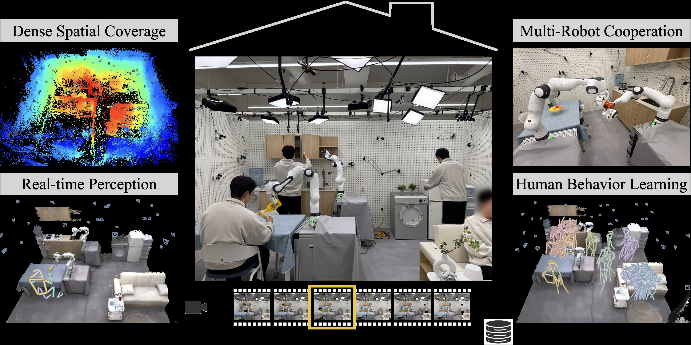
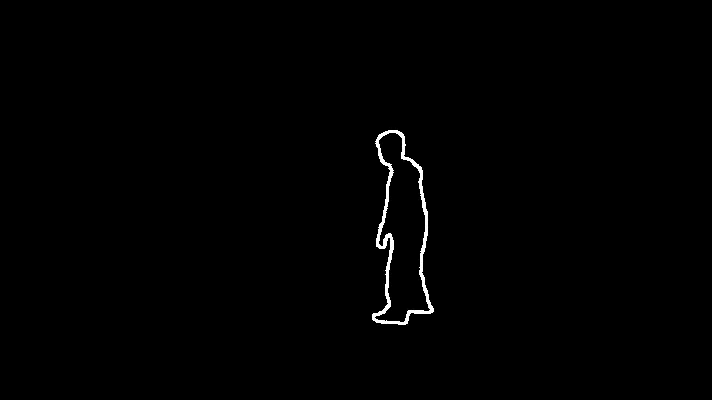
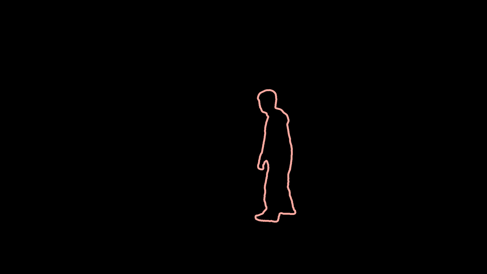

OmniRobotHome: A Multi-Camera Platform for Real-Time Multiadic Human-Robot Interaction
TL;DR
OmniRobotHome establishes a room-scale platform integrating 48 hardware-synchronized RGB cameras and two Franka arms to enable real-time, occlusion-robust multiadic human-robot interaction in a natural home environment. This is achieved via an end-to-end pipeline that fuses multi-view 3D reconstruction with dedicated stereo vision for object tracking, enabling policies conditioned on long-horizon, room-scale state.
The Problem
Real homes necessitate multiadic collaboration, where multiple humans and robots operate concurrently within a shared workspace, executing interleaved subtasks that possess tight spatial and temporal coupling. The primary bottleneck in realizing this capability is the requirement for reliable, real-time 3D tracking amidst persistent occlusion and rapid state changes inherent to unstructured domestic settings.
The existing literature exhibits several gaps: most prior robotics research assumes constrained environments with localized sensing, failing to model the dynamics of surrounding human motion. Furthermore, computer vision research addressing large-scale human sensing typically targets offline processing or dataset construction, rarely supporting the stringent demands of real-time operation. Consequently, platforms capable of providing the necessary real-time, occlusion-robust perception required to rigorously study multiadic collaboration under close-proximity interaction remain largely unexplored.
Key Contributions
We present three key contributions: 1. A room-scale residential platform featuring 48 hardware-synchronized cameras and two robot arms. 2. An end-to-end real-time sensing pipeline encompassing perception, data acquisition, and human motion prediction. 3. Systematic human-robot interaction studies conducted in multiadic residential environments, demonstrating that wide-area sensing, real-time perception, and long-term behavioral modeling each yield measurable gains in safety and assistive performance.
How It Works

Fig. 1: OmniRobotHome is a room-scale platform integrating 48 hardware- synchronized RGB cameras for real-time, markerless, occlusion-robust 3D tracking of multiple humans and objects with two Franka arms for temporally aligned actuation, all in a unified world frame. Continuous capture supports lon
Fig. 2: System overview of OmniRobotHome. 48 hardware-synchronized cam- eras across 12 edge nodes provide real-time markerless 3D perception of humans, ob- jects, and robots in a unified world frame. Details in Sec. 3.
Fig. 2: System overview of OmniRobotHome. 48 hardware-synchronized cam- eras across 12 edge nodes provide real-time markerless 3D perception of humans, ob- jects, and robots in a unified world frame. Details in Sec. 3.Fig. 2: System overview of OmniRobotHome. 48 hardware-synchronized cam- eras across 12 edge nodes provide real-time markerless 3D perception of humans, ob- jects, and robots in a unified world frame. Details in Sec. 3.
OmniRobotHome operates by deploying 48 hardware-synchronized RGB cameras across 12 edge nodes to capture a $23.1 \text{ m}^2$ residential space at a rate of $30 \text{ Hz}$. A central server performs 3D whole-body keypoint triangulation using RANSAC-based multi-view reconstruction, while a calibrated stereo pair handles marker-free 6D object pose estimation at $6 \text{ Hz}$. This unified scene state is temporally aligned with the two Franka Research 3 arms. The continuous capture capability facilitates long-horizon human behavior memory, allowing collaboration policies to be conditioned on the live, room-scale 3D state for tasks such as safety-aware coexistence and human-anticipatory assistance.
48 hardware-synchronized RGB cameras
These cameras are instrumental in instrumenting the $23.1 \text{ m}^2$ residential space, providing the necessary dense visual coverage required to mitigate occlusion effects across the scene.
12 edge nodes
These nodes execute computationally intensive tasks in parallel. Specifically, they run TensorRT-optimized YOLO26 (INT8) for object detection and RTMPose (FP16) for 2D whole-body keypoint estimation.
Central server
The central server is responsible for fusing the data streams. It triangulates 3D joints via RANSAC-based multi-view reconstruction and applies a One Euro Filter for subsequent temporal smoothing of the reconstructed poses.
Calibrated stereo pair
This dedicated component is utilized for object 6D pose estimation. It provides dense metric depth information via FoundationStereo.
Two Franka Research 3 arms
These arms are deployed to facilitate multi-robot actuation. Their control loops are tightly temporally aligned with the shared perception stream derived from the sensor network.
Results
The performance metrics derived from the interaction studies are summarized below:
| Metric | Value | Baseline | Source |
|---|---|---|---|
| Avg. Cycle [s] (Dynamic Policy) | 63.12 | Non-aware | Table 1 |
| Human Hits (Dynamic Policy) | 28.5 | Non-aware | Table 1 |
| Human Hits (Dynamic Policy + Behavior Learning) | 21.5 | Dynamic | Table 1 |
| Correct placement ratio (%) (LLM at 50% demos) | 88.9 | Lookup | Table 2 |
Why This Matters for Robotics
The findings underscore that for complex, multi-agent tasks operating within unstructured environments, the availability of real-time, room-scale 3D perception is the critical enabling factor. Furthermore, integrating long-term behavioral memory into robotic policies allows systems to transition from purely reactive safety protocols to genuinely anticipatory assistance without incurring unacceptable throughput degradation. Fundamentally, the success of tightly coupled, concurrent task execution hinges upon maintaining a unified world frame shared consistently across both the perception stack and the multi-robot actuation layer.
Limitations & Open Questions
Two primary limitations were identified. First, the object 6D pose estimation relies entirely on a fully learned pipeline operating on a calibrated stereo pair, as the hardware synchronization required across all 48 streams precludes the use of dedicated, synchronized depth sensors for this task. Second, our analysis of safety-aware coexistence reveals a fundamental safety-throughput tradeoff when employing static radius policies for collision avoidance. Future work must investigate dynamic, context-aware safety margins to decouple this trade-off.
Citation
Paper: 2604.28197
@article{260428197,
title = {OmniRobotHome: A Multi-Camera Platform for Real-Time Multiadic Human-Robot Interaction},
author = {Junyoung Lee and Sookwan Han and Jeonghwan Kim and Inhee Lee and Mingi Choi and Jisoo Kim et al.},
journal = {arXiv preprint arXiv:2604.28197},
year = {2026},
url = {https://arxiv.org/abs/2604.28197}
}